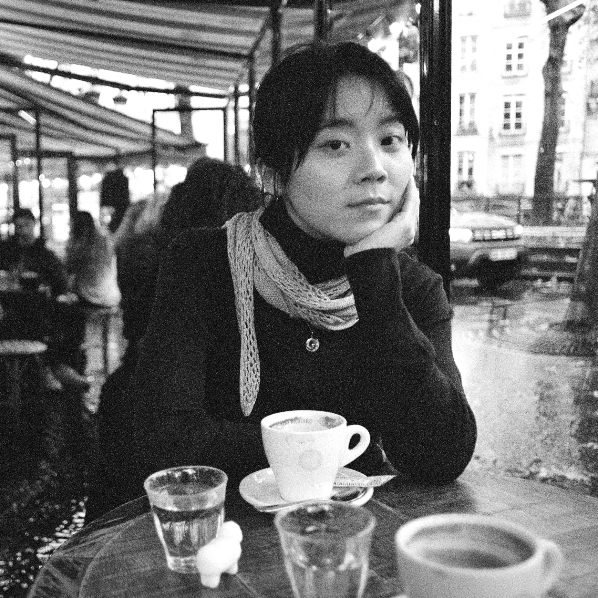
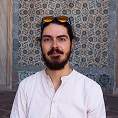

Tuan is a PhD at TU/e Industrial Design whose research focuses on the value alignment between design practice, education, and AI. She works in higher education environments to facilitate discussions around values and conflicts, through deploying designerly tools and activities.
When she’s not doing PhD, you can usually find her baking bread in the kitchen.

Mihnea is a PhD at TU/e Industrial Design whose research sits at the intersection of healthcare, data science, medical technology. He focuses on how design researchers can support clinicians in making sense of data in their daily work. He also has a passion for teaching and coaching students in the department.
Beyond PhD, he enjoys making and building things, from home improvement projects and art, to gaming accessories, or exquisite cocktails.
These people have helped shaping the workshops in the past: